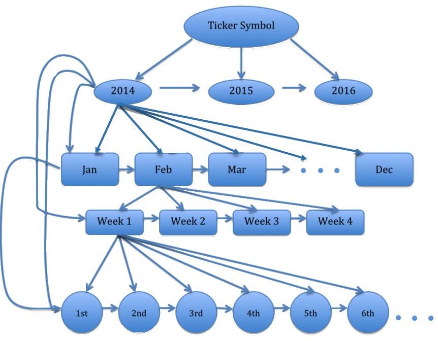

Stock Price Time Series:
Querying Large Data
With time series data, we can create relationships between subsets of time. A specific year can be divided into months, and the months can be divided to days.
Within the graph database, we can create the relationship between a year and its months through edges, and the same for months to days.
This allows us to create powerful queries with a variety of relationship groups and allows us to traverse them to build applications.
In this demo, when you select a specific time frame, our database is queried for an object corresponding to the time frame, and we traverse its relationships to uncover the data to display.
Simply traverse, no joins necessary!
A
b
o
u
t